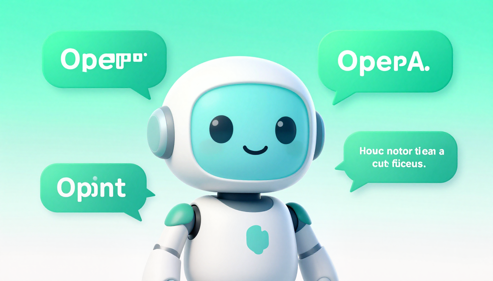

ChatGPT Review (2026): Is It Still the Best AI Assistant?

ChatGPT has been the face of AI since its explosive launch in late 2022. Now in 2026, with GPT-4o as its core model and a rapidly expanding feature set, the question isn't whether ChatGPT is good — it's whether it's still the best option in an increasingly crowded field.
We spent two weeks testing ChatGPT extensively across writing, coding, research, data analysis, and creative tasks. Here's our honest, detailed review.
What Is ChatGPT?
ChatGPT is OpenAI's flagship AI assistant, accessible via web, mobile apps (iOS and Android), and API. It's powered by GPT-4o, a multimodal model that can handle text, images, audio, and file uploads. The platform also includes custom GPTs (specialized chatbots), a plugin ecosystem, and integrations with third-party services.
Key Features
- GPT-4o Model: Fast, capable, and multimodal — handles text, images, and files
- Custom GPTs: Create or use pre-built specialized assistants for specific tasks
- Web Browsing: Search and cite current internet sources
- Code Interpreter: Run Python code, analyze data, create charts
- File Uploads: Process PDFs, spreadsheets, images, and documents
- Image Generation: Create images with DALL-E integration
- Memory: Remembers your preferences across conversations
- Voice Mode: Real-time voice conversations on mobile
Performance Testing
Writing Quality
ChatGPT excels at generating clear, well-structured content. Whether you need blog posts, emails, marketing copy, or creative writing, it produces polished results quickly. The writing style is versatile — you can specify tone, audience, and format. For most writing tasks, it scores a solid 9/10.
Coding & Development
For coding, ChatGPT is strong but not the absolute best. It writes clean code in most popular languages, explains concepts well, and can debug issues. However, for large codebases and complex refactoring, specialized tools like Cursor AI have an edge. Coding score: 8/10.
Research & Analysis
With web browsing enabled, ChatGPT is a capable research assistant. It can find, synthesize, and cite information from multiple sources. The Code Interpreter makes it excellent for data analysis tasks. Research score: 8.5/10.
Creative Tasks
From brainstorming to storytelling to image generation via DALL-E, ChatGPT is impressively creative. It's particularly good at generating ideas and iterating on concepts. Creativity score: 8.5/10.
✅ Pros
- Most versatile AI assistant available
- Excellent writing and content quality
- Strong multimodal capabilities
- Huge ecosystem of Custom GPTs
- Active development and frequent updates
- Free tier available for basic use
❌ Cons
- Can be verbose and repetitive
- Occasional factual errors (hallucinations)
- Plus plan ($20/mo) needed for best features
- Not specialized for any single task
- Privacy concerns with conversation data
Pricing
| Plan | Price | Key Features |
|---|---|---|
| Free | $0 | GPT-4o mini, limited messages, basic features |
| Plus | $20/mo | GPT-4o, DALL-E, browsing, Code Interpreter, Custom GPTs |
| Pro | $200/mo | Unlimited access, o1 pro mode, highest rate limits |
| Team | $25/user/mo | Everything in Plus + admin controls, shared workspace |
🎁 Free AI Tools Guide 2026
Download our free guide with 50+ AI tool comparisons, pricing, and recommendations.
Download Free Guide →📖 Related Articles
Frequently Asked Questions
Is ChatGPT free to use?
Yes, ChatGPT offers a free tier with access to GPT-4o mini. The Plus plan at $20/month unlocks GPT-4o, DALL-E image generation, advanced data analysis, and priority access during peak times.
What can ChatGPT do?
ChatGPT can write and edit text, analyze data, generate images (Plus), write and debug code, answer questions, translate languages, summarize documents, create presentations, and much more.
Is ChatGPT the best AI chatbot?
ChatGPT is one of the best overall AI chatbots due to its versatility, quality, and large ecosystem. However, Claude excels at long documents, Gemini integrates with Google services, and Copilot offers real-time web access.
How accurate is ChatGPT?
ChatGPT is generally accurate for common topics but can make mistakes on specialized or recent information. Always verify important facts, especially for medical, legal, or financial decisions.
Pros & Cons at a Glance
ChatGPT (Free)
✅ Pros
• GPT-4o mini access
• Web browsing
• Image generation
❌ Cons
• Daily usage caps
• Slower responses
• Limited plugins
ChatGPT Plus ($20/mo)
✅ Pros
• GPT-4o access
• DALL-E integration
• Custom GPTs
❌ Cons
• $20/month
• Same knowledge cutoff issues
• Can still hallucinate
ChatGPT Team
✅ Pros
• Admin controls
• Higher usage limits
• Workspace management
❌ Cons
• $25/user/month
• Minimum 2 users
• Enterprise features limited
ChatGPT Enterprise
✅ Pros
• Unlimited access
• SOC 2 compliance
• Advanced analytics
❌ Cons
• Custom pricing
• Minimum commitment
• Overkill for individuals
GPT-4o vs GPT-4o mini
✅ Pros
• Faster responses
• Better reasoning
• Multimodal
❌ Cons
• Paid tier only
• Sometimes overconfident
• Context window limits
Who Should Use ChatGPT?
Best for: General-purpose users who want one AI tool that does everything reasonably well. Content creators, marketers, students, and professionals who need versatile AI assistance.
Not ideal for: Developers who need deep codebase integration (try Cursor), users who need 100% factual accuracy (all AIs can hallucinate), or those on a strict $0 budget needing unlimited usage.
ChatGPT vs Competitors
| Feature | ChatGPT | Claude | Gemini |
|---|---|---|---|
| Writing Quality | ⭐⭐⭐⭐⭐ | ⭐⭐⭐⭐⭐ | ⭐⭐⭐⭐ |
| Coding | ⭐⭐⭐⭐ | ⭐⭐⭐⭐⭐ | ⭐⭐⭐⭐ |
| Reasoning | ⭐⭐⭐⭐ | ⭐⭐⭐⭐⭐ | ⭐⭐⭐⭐ |
| Multimodal | ⭐⭐⭐⭐⭐ | ⭐⭐⭐⭐ | ⭐⭐⭐⭐⭐ |
| Speed | ⭐⭐⭐⭐ | ⭐⭐⭐⭐ | ⭐⭐⭐⭐⭐ |
| Free Tier | Yes | Yes | Yes |
| Price | $20/mo | $20/mo | $20/mo |
Final Verdict
ChatGPT remains one of the best all-around AI assistants in 2026. While it faces stiff competition from Claude (reasoning) and Gemini (Google integration), its versatility, massive ecosystem, and continuous improvements keep it at the top for most users. We rate it 4.7 out of 5 stars.
If you can only subscribe to one AI tool, ChatGPT Plus is still the safest bet. But power users should consider combining it with Claude for complex reasoning tasks.
Frequently Asked Questions
Is ChatGPT free?
Yes, ChatGPT offers a free tier with GPT-4o mini and limited messages. The Plus plan at $20/month unlocks the full GPT-4o model and all features.
Is ChatGPT better than Claude?
It depends on your needs. ChatGPT is more versatile with multimodal features and a larger ecosystem. Claude excels at nuanced reasoning, long documents, and coding. See our full Claude review for details.
Can ChatGPT write code?
Yes, ChatGPT is a capable coding assistant. It can write, debug, and explain code in most programming languages. For dedicated coding, also consider Cursor AI.